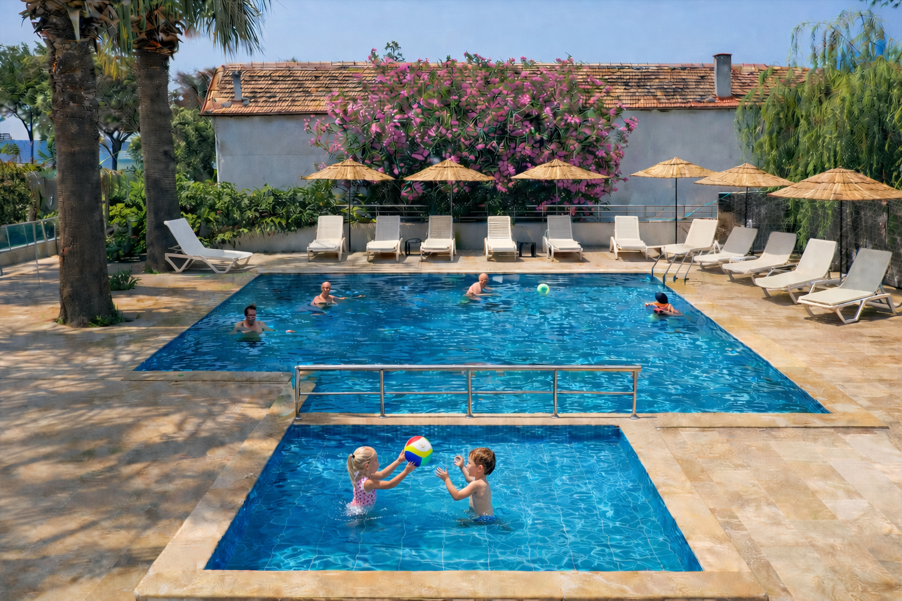

Güzelçamlı Otel – Medos Beach Hotel


Güzelçamlı, Kuşadası'nın en sakin ve doğal köylerinden biridir. Aydın iline bağlı bu kıyı yerleşimi; berrak denizi, temiz havası ve Dilek Yarımadası Milli Parkı ile çevrelenmiş konumuyla kitle turizminden uzak, huzurlu bir tatil arayanların gözdesi haline gelmiştir. Güzelçamlı'da otel arayanlar için Medos Beach Hotel, bölgenin en köklü ve en konforlu konaklama seçeneklerinden birini sunmaktadır.
Güzelçamlı'nın Kalbinde Konumlanan Bir Otel
Medos Beach Hotel, Güzelçamlı merkeze yürüme mesafesinde, denize sıfır konumda yer almaktadır. 49 odası ve 150 kişilik yatak kapasitesiyle otomobil gürültüsünden, kalabalık tatil beldelerinden uzakta, sakin bir atmosfer sunar. Özel iskelemiz sahile yalnızca 50 metre, plaj ise 250 metre mesafededir.
Oda Tipleri ve Olanaklar
Standart Odalar'dan Aile Süitlerine kadar üç farklı oda tipimizle 2 kişilik çiftlerden 7 kişilik ailelere kadar her misafirimize uygun çözüm sunuyoruz. Tüm odalarımızda klima, minibar, uydu TV, ücretsiz Wi-Fi ve Fransız balkon bulunmaktadır. Büyük aile grupları için 75 m² genişliğindeki Aile Süiti tercih edilebilir.
Havuz, Restoran ve Diğer Hizmetler
Otelimizde 70 m² yetişkin havuzu ve 16 m² çocuk havuzu mevcuttur. Lidya Restaurant'ta kahvaltı ve akşam yemeği seçeneklerimizin yanı sıra havuz başı bar ve snack bar hizmetlerimiz de bulunmaktadır. Misafirlerimiz Soft All Inclusive veya Bed & Breakfast konseptlerinden birini tercih edebilir.
Güzelçamlı'da Gezilecek Yerler
Otelimizin yakın çevresinde pek çok doğal ve tarihi güzellik yer almaktadır. Dilek Yarımadası Milli Parkı yalnızca 2 km uzaklıkta olup yüzme, doğa yürüyüşü ve yaban hayatı gözlemi imkânı sunar. Zeus Mağarası 1 km, Efes Antik Kenti ise 30 km uzaklıktadır. Günübirlik tekne turlarıyla Ege'nin el değmemiş koylarını da keşfedebilirsiniz.